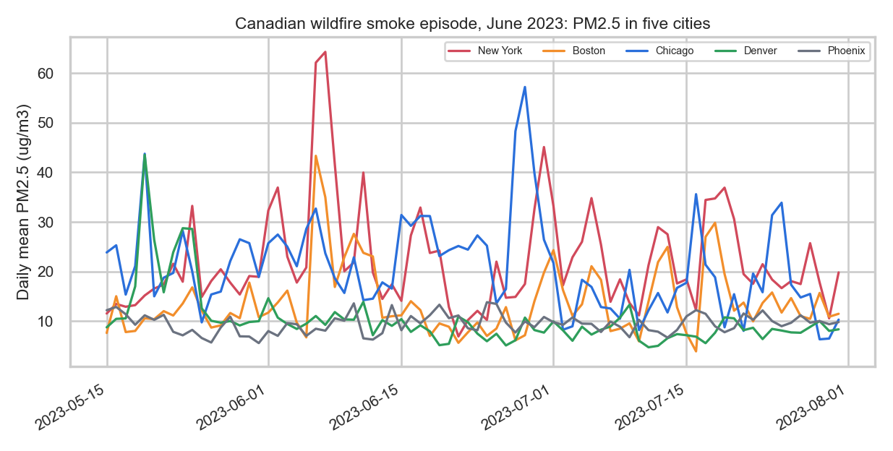

How Weather Shapes the Air We Breathe, and What It Means for Lung Health
Air quality, weather and respiratory health across 55 US cities, 2023
On June 7, 2023, smoke from Canadian wildfires pushed New York City's daily fine-particle level to more than four times the World Health Organization guideline, while Denver and Phoenix barely changed. That contrast frames this project: how much of the air people breathe is set by weather, season and distant events, and how does that air relate to asthma and COPD? The project draws on three data sources covering hourly air quality and daily weather for 55 cities in 2023 and county-level health statistics for 2,956 US counties.
55US cities analyzed
481,800hourly air quality readings
2,956counties with health data
3data sources

What this project covers
- Data preparation and exploratory analysis: complete
- Clustering and PCA: to come
- Naive Bayes and decision trees: to come
- Support vector machines: to come
- Regression and neural networks: to come